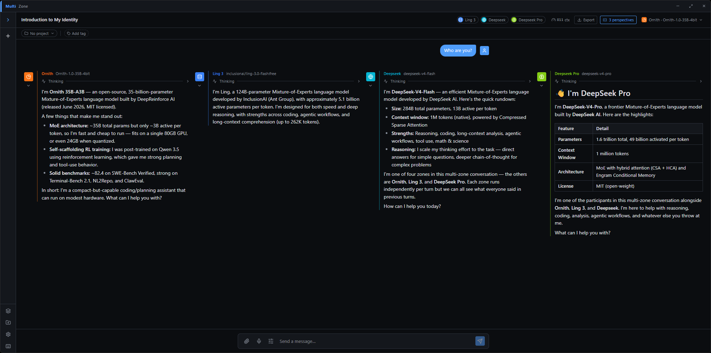

Movement IV
Colore.
— the instrument's own finish
Thirteen animated backgrounds ship with MultiZone. Every one reacts to your cursor, and none of them need it to keep moving. Eight are ported below and running for real — same four sliders as the app, same hue-variation behaviour. Move your pointer over the stage.
Backgrounds
giocoso
bar 1
Hue variation is the one worth playing with: it spreads each element's colour around your accent instead of painting everything one flat tone. Leave it at 0 for a single-colour look.
Boids
A flock that aligns, crowds and scatters from the cursor like a predator.
Fish
Procedurally animated fish — jointed spines that swim with fins and a trailing tail — schooling, and darting away when you get close.
Topography
Breathing contour lines of a slowly morphing landscape, with the cursor pushing a hill into it.
Puzzle
An interlocking jigsaw where pieces near the cursor lift, tilt and light up.
Mountains
Parallax ridgelines under a drifting sun or moon, with a starfield above.
Orbs
Slow layered colour clouds that swirl, bloom and drift apart under the cursor.
Palette
a piacere
bar 30
Type the hex. Don't convert it to three numbers.
Every colour control takes a hex value as well as the swatch — paste #4f9cf9
(the # is optional, and #abc shorthand works) instead of translating
it into the OS picker's sliders. Seven variables carry the whole theme.
Bloom
Accent-filled controls and the frame around whatever has focus emit. The halo goes on the element drawing the visible boundary, so a glow inside a rounded frame is round. It marks state, not structure, which is what the buttons on this page are doing.
Fonts & interface size
The UI face and its scale are yours. This site is set in Inter because that is MultiZone's own default — change it in the app and the whole interface follows.
Shadows
On or off, at your depth. Flat if you want flat.
Light and dark
Both ship. Press Lights down / up in the header of this page to see MultiZone's real light theme in the capture below — the screenshot swaps with it.
Capture
bar 44
And this is the window itself.
A real capture, unretouched: four zones answering “Who are you?” in one thread — a 35B model on the machine's own GPU beside three hosted frontier models. Toggle the house lights in the header and this follows.

Custom CSS
ad libitum
bar 61
Your stylesheet, loaded after the app's.
Which means an equally specific rule wins and you never have to reach for
!important. It has its own on/off switch, and that matters more than it
sounds: a rule that hides the wrong thing can be switched off without first finding
it in the text.
/* write colours as the theme's variables, not as literals, or the sheet breaks the moment you switch between light and dark */ .sidebar { width: 220px; } button { border-radius: 2px; } .message--assistant { border-left: 2px solid var(--color-accent); background: var(--color-panel); }
Everything in this movement — the palette, the effects and the custom sheet — is also
reachable over the local HTTP API and by the
assistant itself. GET /api/theme returns the appearance settings in force
plus a schema for them: every field with its type, range, default and meaning, and
the palette-key ↔ CSS-variable table. PATCH validates what you send and names
what is wrong with a patch it rejects, rather than writing a misspelled field and reporting
success.
First paint
subito
Whatever you chose is on screen from the first frame.
The preferences live in the database, so the window used to paint before it knew what it should look like: a light-mode install flashed a dark panel, and a changed interface size resized the whole UI a beat after it appeared.
The last appearance is now restored before the first paint, and the app's mark is drawn over the remaining gap while the chat list and background arrive. Click, tap or press any key to skip it.